COPE ClientRecorder for Eclipse
COPE plugin for Eclipse can be installed using following update-site:
http://cope.eecs.oregonstate.edu/client-recorder/
If you need help with installing COPE plugin, see installation instructions below
Compatibility: COPE plugin works with Eclipse Juno (4.2) and newer versions of Eclipse IDE (Kepler 4.3, Luna 4.4)Installation instructions (step by step help)
In order to install ClientRecorder plugin, you need to perform the following actions:
- Select Help -> About Eclipse:

-
Check name of currently installed version. It should be Eclipse Juno (4.2) or Eclipe Kepler (4.3) or Eclipse Luna (4.4). If you have an older version, upgrade to current version of Eclipse. In order to upgrade Eclipse, you need to go to http://www.eclipse.org/downloads/ page, select latest stable release of Eclipse IDE for download and install it on your computer

-
Go to Help -> Install New Software...

-
Installation page will appear. Press "Add" button to add new plugin repository:

-
Type in ClientRecorder into the "Name" field. Use following URL to fill in "Location" field: http://cope.eecs.oregonstate.edu/client-recorder/

-
Select "COPE ClientRecorder" and press "Next":

-
Press 'Next':

-
Select "I accept the terms of the license agreement" and press "Finish":

-
Restart Eclipse by pressing 'Yes':

Uninstallation instructions (step by step help)
In order to uninstall ClientRecorder plugin, you need to perform the following actions:
- Select Help -> About Eclipse:
- Click 'Installation Details':

- Select COPE ClientRecorder plugin in the list and press 'Uninstall...':

- Press 'Finish' to complete unistallation procedure:

- Restart Eclipse
COPE ClientRecorder for IntelliJ IDEA
Compatibility: COPE plugin works with IntelliJ IDEA 13 and newer versions of IntelliJ IDEA IDE.COPE plugin for IntelliJ IDEA can be installed using following URL:
http://cope.eecs.oregonstate.edu/IDEARecorder/updatePlugins.xml
Installation instructions (step by step help)
In order to install COPE plugin for IntelliJ IDEA, you need to perform the following actions:
- Open IntelliJ IDEA
- Open File -> Settings... dialog
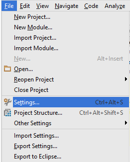 - Select Plugins -> Browse repositories...
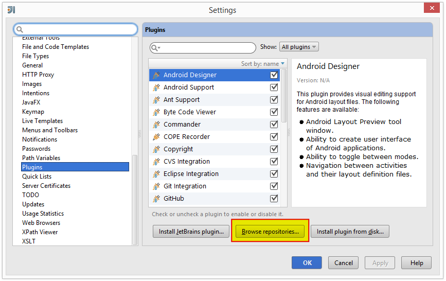 -
Click 'Manage repositories' button:
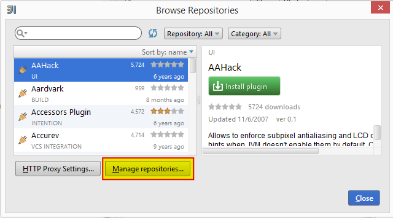 -
Press plus button to add Plugin repository:
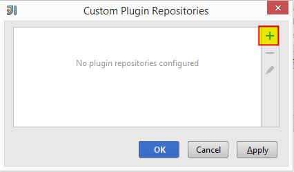 - Enter following URL to add plugin repository: http://cope.eecs.oregonstate.edu/IDEARecorder/updatePlugins.xml
- Press 'OK'
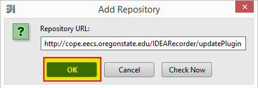 -
Select 'edu.oregonstate.cope.intellij.recorder' plugin and press 'Install plugin' button:
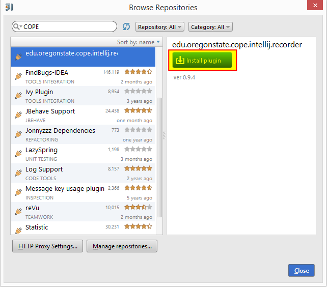 -
Press 'Yes':
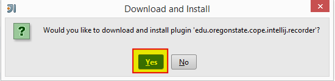 -
Press 'Close' after plugin has been successfully installed:
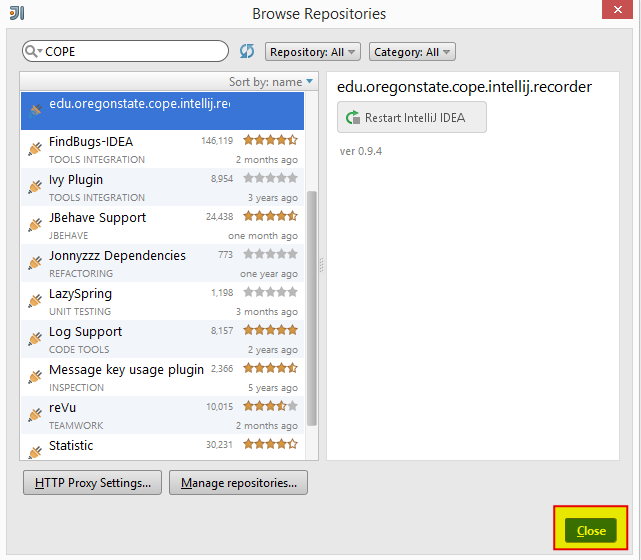 -
Press 'Restart' when following dialog window pops up:
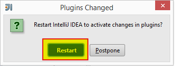 -
You will see following icon if COPE plugin has been successfully installed:
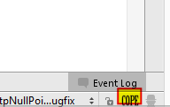
Uninstallation instructions (step by step help)
In order to uninstall COPE plugin from IntelliJ IDEA, you need to perform the following actions:
-
Open File -> Settings... dialog
-
Select Plugins -> COPE Recorder -> Uninstall plugin:
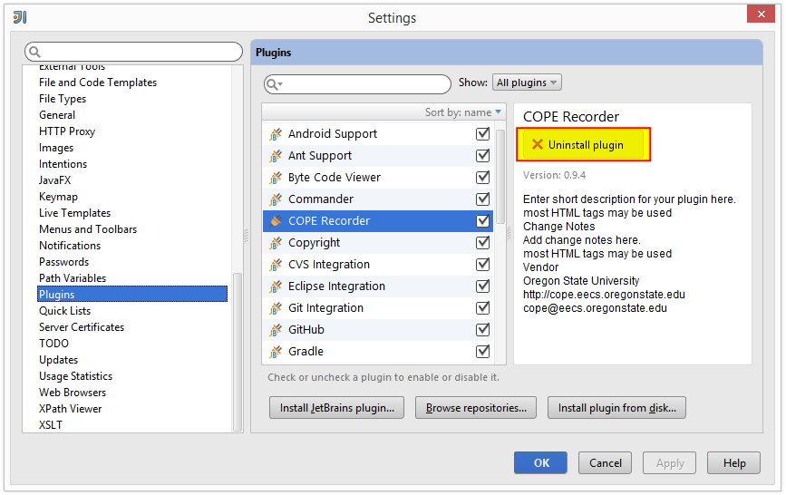 -
Click 'Yes':
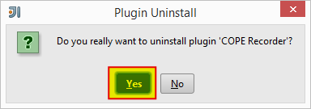 -
Click 'OK':
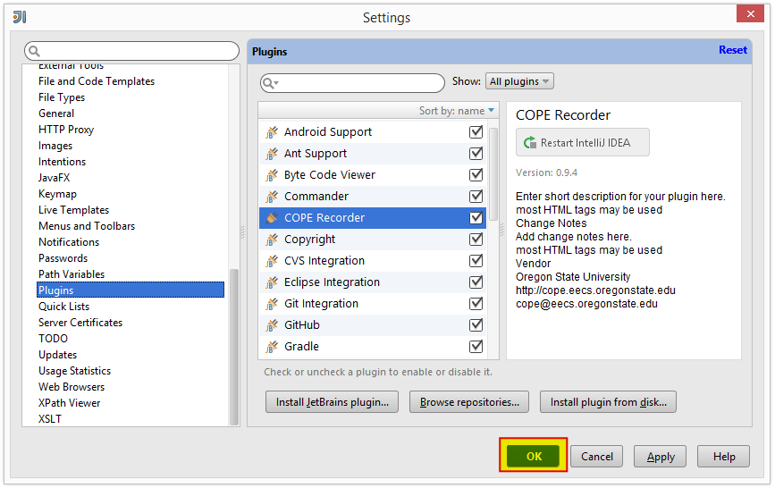 -
Click 'Restart' button:
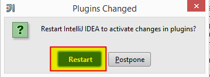 -
There will be no COPE icon in bottom right corner after successfull uninstallation and restart of IntelliJ IDEA:
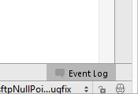